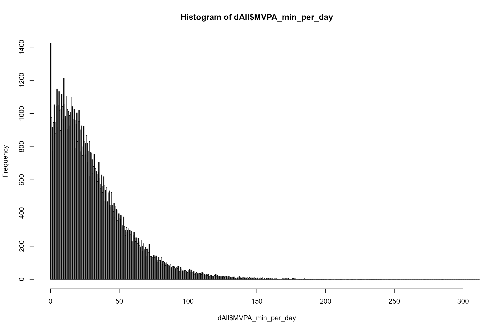
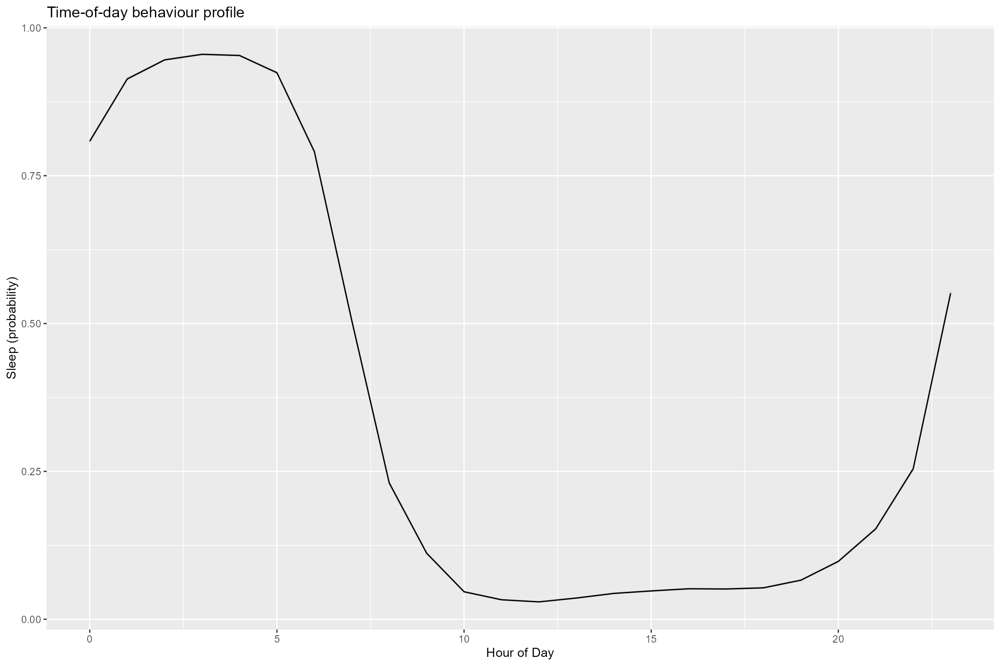

2_HealthAssociationAnalysis.RmdIn this tutorial, we will go through a basic health association analysis using movement behaviour data.
As well as external packages, we’ll use some helper functions we’ve prepared previously. If you want to modify them, you can find them in the file R/utils.R on the GitHub page (see also intro notes).
First we will load required packages, and the data we already prepared.
# First we need to install packages that aren't already present.
if (!require("pacman")) install.packages("pacman")
#> Loading required package: pacman
#> Warning: package 'pacman' was built under R version 4.0.4
pacman::p_load(devtools, ggtern, ggplot2, reshape2, data.table)
# If you've installed this as a package you can load helper functions like this
library(week2DataChallenge)
# We then load the data prepared in the last tutorial.
dAll <- data.frame(fread("J:\\cdt_prep\\week2_wearables_data_challenge_2021\\week2DataChallenge\\data_and_data_prep\\ukb-data-challenge.csv")) # Substitute with the correct path! We need to make sure some variables are factors, as subsequent code relies on that. If you change the variables you use, you might need to add some variables here. I also added in a variable on the scale
dAll$sex <- as.factor(dAll$Sex)
dAll$ethnicity <- as.factor(dAll$ethnicity)
dAll$smoking <- as.factor(dAll$smoking)
dAll$alcohol <- as.factor(dAll$alcohol)
dAll$broadAgeGroup <- as.factor(dAll$broadAgeGroup)
behaviour_vars <- c("MVPA", "LIPA", "SB", "sleep")
for (variable in behaviour_vars){
dAll[, paste0(variable, "_min_per_day")] <- 24*60*dAll[, variable]
dAll[, paste0(variable, "_hr_per_day")] <- 24*dAll[, variable]
}The following code constructs a table to describe accelerometer measured attributes by conventional groupings (e.g. age, sex, self-rated health, season). It does two-way analysis of variance, adjusted for the variables listed as confounder columns.
The code might look excessively complicated, because we wanted to save it as a html output. You could do the same thing using R data frames, and then work out formatting afterwards…
# specify groups (i.e. major row blocks)
groups <- c("broadAgeGroup", "sex") # Fill this in with groups you want to look at
# specify accelerometer outcomes (i.e. column headings)
outcomeCols <- c( "acc.overall.avg", "LIPA_hr_per_day") # Fill this in with a list of outcomes you want to look at
# specify two-way analysis of variance confounder columns
confounderCols <- c("broadAgeGroup", "sex", "ethnicity", "smoking", "alcohol") # Fill this in with what
# you want to adjust for when running the ANOVA
# specify output file name
outHTML<-'table1.html'
# write table header code
html <- '<html><head><title>Acc summary table</title></head><table>'
html <- paste(html, '<tr><th></th>')
html <- paste(html, '<th>Individuals</th>')
for(col in outcomeCols){
html<-paste(html, '<th>', col, '</th>')
}
html <- paste(html, '</tr>')
html <- paste(html, '<tr><th></th>')
html <- paste(html, '<th>[ n ]</th>')
html <- paste(html, '<th>[mean ± stdev m<i>g</i>]</th>')
html <- paste(html, '<th>[mean ± stdev LIPA hr/dy]</th>')
# iterate through each major row block
for(group in groups){
html<-paste(html, '\n<tr><td><b>', group, '</b></td><td></td><td></td><td>')
html<-paste(html, '</td><td></td><td></td><td></td><td></td><td></td><td></td></tr>')
group.tmp <- data.frame(matrix(ncol=4, nrow=0)) #df to store outputs for subsequent effect size calculations
colnames(group.tmp) <- c("item", "outcome", "avg", "stdev")
# report mean/stdev/n summary stats for each "item" in group e.g. each age categor
for(item in levels(dAll[[group]])){
html<-paste(html, '<tr>')
html<-paste(html, '<td>', item, '</td>')
# temp store of all relevant outcome data related to this "item"
itemData <- dAll[dAll[[group]]==item, outcomeCols]
n <- nrow(itemData)
html <- paste(html, '<td align="center">', format(n,big.mark=","), '</td>')
# iterate through each acceleroemter outcome (i.e. each column)
for(outcome in outcomeCols){
html <- paste(html, summary4tableHTML_simple(itemData[[outcome]],1))
avg <- mean(itemData[[outcome]], na.rm=TRUE)
stdev <- sd(itemData[[outcome]], na.rm=TRUE)
group.tmp <- rbind(group.tmp, data.frame(item= item, outcome=outcome,
avg=avg, stdev=stdev))
}
html<-paste(html, '</tr>')
}
# now calculate two-way ANOVA p-value between subgroup "items" for each acc outcome
html<-paste(html, '<tr><td>p value<sup>A</sup></td><td></td>')
for(outcome in outcomeCols){
tmpconfounderCols <- confounderCols
if (!(group %in% tmpconfounderCols)){
tmpconfounderCols <- c(group, tmpconfounderCols)
}
formulaStr <- paste(c(outcome,' ~ ', paste(tmpconfounderCols, collapse=' + ')), collapse='')
itemANOVA <- aov(as.formula(formulaStr), data=dAll)
# extract p-value for specific variable of interest
tmp <- as.data.frame(summary(itemANOVA)[[1]])
groupResult <- tmp[grep(group, rownames(tmp)), "Pr(>F)"]
# write formatted p-value to html
html <- paste(html, pValueHTML_cell(groupResult,1e-300))
}
html <- paste(html, '</tr>')
# calculate effect size between subgroup "items" for each acc outcome
html <- paste(html, "<tr><td>Cohen's d</td><td></td>")
for(outcome in outcomeCols){
# read relevant subgroup mean/stdev values stored from summary stats derived earlier
grouping <-group.tmp[(group.tmp[, "outcome"] ==outcome),]
minVal <- min(grouping['avg'])
maxVal <- max(grouping['avg'])
lowest <- grouping[(grouping$avg==minVal), c('avg','stdev')]
highest <- grouping[(grouping$avg==maxVal), c('avg','stdev')]
# calculate Cohen's d effect size and format for HTML output
cohenD <- effectSize(lowest$avg,lowest$stdev,highest$avg,highest$stdev)
cohenD <- format(round(cohenD, 2), nsmall=2)
cohenD <- sub('^(-)?0[.]', '\\1.', cohenD)
html <- paste(html, '<td align="center">', cohenD, '</td>')
}
html <- paste(html, '</tr>')
}
#finalise HTML table
html <- paste(html, '\n</table>')
html <- paste(html, '<br><i><sup>A</sup> Age, sex:</i> ')
html <- paste(html, 'Two-way analysis of variance test used to compare metrics between groups')
html <- paste(html, 'adjusting for age, sex, ethnicity, smoking status and alcohol consumption frequency.')
html <- paste(html, '</html>')
# and write html to file
write(html, file = outHTML)
print(paste0('standard table done, written to: ', outHTML))
#> [1] "standard table done, written to: table1.html"
knitr::include_url(outHTML)You might think more about the distribution of some of the accelerometry-derived variables - for some, this may not be the best way to characterise them (for example, the distribution of MVPA is very skewed). But it’s good for a first description!
We’ll also plot some of the variables to get a feel for how they’re distributed.
#look at deciles
quantile(dAll$acc.overall.avg, prob = c(0.10, 0.50, 0.90), na.rm = TRUE)
#> 10% 50% 90%
#> 18.74053 27.14073 38.46044
# MVPA
hist(dAll$MVPA_min_per_day, breaks=1000, xlim=c(0,100))
#look at deciles
quantile(dAll$acc.overall.avg, prob = c(0.10, 0.50, 0.90), na.rm = TRUE)
#> 10% 50% 90%
#> 18.74053 27.14073 38.46044Now let’s look descriptively at something we might expect to vary as activity status varies: BMI.
plotVarAndQuintile(dAll, # dataset
'acc.overall.avg', # exposure
'BMI', # outcome
FALSE # [TRUE/FALSE] save plots to PDF
)
Let’s have a look at some of the machine-learned variables, to see if we believe them! Here we’ll look at plots of probability of being in a particular behaviour by time of day:
plotAverageDay(dAll, "sleep.hourOfDay.", ".avg", "Sleep (probability)")You might want to extend this function to plot the different profiles of different groups (e.g. healthy/ unhealthy individuals, or age groups).
Let’s run a minimally (age and sex) adjusted linear model for BMI, against fifths of average acceleration vector magnitude. This is attempting to model statistically the association we were looking at descriptively in the end of the last section.
dAll$acc_quintiles <- cut(dAll$acc.overall.avg, breaks = c(quantile(dAll$acc.overall.avg, probs = seq(0, 1, by = 0.2), na.rm = TRUE))) # cut at quintiles
min_adj_lm_BMI <- lm(BMI ~acc_quintiles + broadAgeGroup+ sex, dAll)We can look at the model summary:
summary(min_adj_lm_BMI)
#>
#> Call:
#> lm(formula = BMI ~ acc_quintiles + broadAgeGroup + sex, data = dAll)
#>
#> Residuals:
#> Min 1Q Median 3Q Max
#> -14.945 -2.925 -0.615 2.188 40.351
#>
#> Coefficients:
#> Estimate Std. Error t value Pr(>|t|)
#> (Intercept) 28.391317 0.060113 472.296 <2e-16 ***
#> acc_quintiles(21.4,25.3] -1.408577 0.044357 -31.755 <2e-16 ***
#> acc_quintiles(25.3,29.1] -2.102733 0.044597 -47.149 <2e-16 ***
#> acc_quintiles(29.1,34.1] -2.687002 0.044913 -59.826 <2e-16 ***
#> acc_quintiles(34.1,99] -3.694102 0.045533 -81.129 <2e-16 ***
#> broadAgeGroup50-59 0.083526 0.055061 1.517 0.129
#> broadAgeGroup60-69 -0.007884 0.053192 -0.148 0.882
#> broadAgeGroup70-79 -0.506534 0.059504 -8.513 <2e-16 ***
#> sexMale 0.856398 0.028314 30.246 <2e-16 ***
#> ---
#> Signif. codes: 0 '***' 0.001 '**' 0.01 '*' 0.05 '.' 0.1 ' ' 1
#>
#> Residual standard error: 4.336 on 96368 degrees of freedom
#> (218 observations deleted due to missingness)
#> Multiple R-squared: 0.08386, Adjusted R-squared: 0.08378
#> F-statistic: 1103 on 8 and 96368 DF, p-value: < 2.2e-16We can also look at the model diagnostics to understand more about the fit of the model:
plot(min_adj_lm_BMI)The problem with the Q-Q plot is caused by the BMI distribution - log-transforming the outcome would be a good option in this case.
Here we’ve looked at a very simple linear model. Next steps might be:
glm function)survival package and the coxph function)For example, here’s an initial Cox regression analysis associating quintiles of overall acceleration with incident ischaemic heart disease.
First we need to set up the data in an appropriate format, with a follow-up time and an indicator at exit indicating whether the participant exited due to an event or due to being censored (either the participant died of another cause or study data ended before they had an event).
# Exclude participants with prevalent IHD
cat(sum(dAll$ischaemic.heart.disease.prevalent), " were excluded due to prior ischaemic heart disease")
#> 4912 were excluded due to prior ischaemic heart disease
dAll <- dAll[dAll$ischaemic.heart.disease.prevalent == 0, ]
# We need to process participants who died as they are censored earlier
death <- read.csv("J:/data_and_prep_utilities/59070_application/health_outcomes/death.txt",
sep = "\t")
dAll$died <- 0
dAll$died[dAll$eid %in% death$eid ] <- 1
dAll <- merge(dAll[, colnames(dAll)[colnames(dAll) != "date_of_death"]], death[, c("eid", "date_of_death")], by = "eid", all.x = TRUE)
cat(sum(dAll$died), "participants died")
#> 2317 participants died
# Note censoring dates of 31.12.20 in England/Scotland and 28.02.2018 in Wales (https://biobank.ndph.ox.ac.uk/ukb/exinfo.cgi?src=Data_providers_and_dates)
dAll$censoring <- as.Date("31/12/2020", format = "%d/%m/%Y")
dAll$censoring[dAll$UkBiobankAssessCent %in% c("Cardiff", "Wrexham", "Swansea")] <- as.Date("28/02/2018", format = "%d/%m/%Y")
# For people who died, we need to censor them at the earliest of their date of death and overall censoring (e.g. a participant in Wales who died in 2020 should nonetheless be # censored at 28.02.2018 - if they had an IHD event in 2019 we wouldn't know about it
dAll$censoring[(dAll$died == 1)] <- pmin(dAll$censoring[dAll$died == 1], as.Date(dAll$date_of_death[dAll$died ==1], format = "%d/%m/%Y"))
# Add follow up variable (censor date for participants without an event, event date for participants with an event)
dAll$follow_up <- dAll$censoring
dAll$follow_up[(dAll$ischaemic.heart.disease.incident == 1)] <- pmin(as.Date(dAll$ischaemic.heart.disease[(dAll$ischaemic.heart.disease.incident == 1)], format = "%Y-%m-%d"), dAll$censoring[(dAll$ischaemic.heart.disease.incident == 1)])
# Note event status at censoring (again, care taken as there are some instances of entries in the data after censoring)
dAll$IHD_at_exit <- 0
dAll$IHD_at_exit[(dAll$ischaemic.heart.disease.incident == 1) & (as.Date(dAll$ischaemic.heart.disease, format = "%Y-%m-%d") == dAll$follow_up)] <- 1
cat(sum(dAll$IHD_at_exit), " had incident hospital diagnosed ischaemic heart disease within the follow up period")
#> 3133 had incident hospital diagnosed ischaemic heart disease within the follow up period
# Calculate follow up time
dAll$fu_time <- as.numeric(difftime(dAll$follow_up, as.Date(dAll$EndTimWear, "%Y-%m-%d %H:%M:%S", tz = "Europe/London")))WARNING: when working with date data, especially when dates are only present for some participants, it is very easy to write code which behaves in strange ways… I did so several times when writing this example (and don’t guarantee it’s error-free now). It is well worth inspecting your data repeatedly to check that the code is doing what you expect. [Obviously not shown here as I can’t print the data frame on the internet… Bear this in mind when using RMarkdown].
We now have an event status indicator at exit and a follow-up time variable, which is enough to run a Cox model:
library(survival)
cox_model <- coxph(Surv(fu_time, IHD_at_exit) ~ broadAgeGroup + sex + acc_quintiles, dAll)
summary(cox_model)
#> Call:
#> coxph(formula = Surv(fu_time, IHD_at_exit) ~ broadAgeGroup +
#> sex + acc_quintiles, data = dAll)
#>
#> n= 91683, number of events= 3133
#> (1 observation deleted due to missingness)
#>
#> coef exp(coef) se(coef) z Pr(>|z|)
#> broadAgeGroup50-59 0.69622 2.00615 0.12645 5.506 3.67e-08 ***
#> broadAgeGroup60-69 1.40226 4.06436 0.12090 11.599 < 2e-16 ***
#> broadAgeGroup70-79 1.84127 6.30455 0.12284 14.989 < 2e-16 ***
#> sexMale 0.77106 2.16206 0.03708 20.792 < 2e-16 ***
#> acc_quintiles(21.4,25.3] -0.17839 0.83661 0.04985 -3.578 0.000346 ***
#> acc_quintiles(25.3,29.1] -0.34828 0.70590 0.05355 -6.504 7.84e-11 ***
#> acc_quintiles(29.1,34.1] -0.37116 0.68993 0.05530 -6.712 1.92e-11 ***
#> acc_quintiles(34.1,99] -0.59452 0.55183 0.06194 -9.599 < 2e-16 ***
#> ---
#> Signif. codes: 0 '***' 0.001 '**' 0.01 '*' 0.05 '.' 0.1 ' ' 1
#>
#> exp(coef) exp(-coef) lower .95 upper .95
#> broadAgeGroup50-59 2.0061 0.4985 1.5658 2.5704
#> broadAgeGroup60-69 4.0644 0.2460 3.2069 5.1511
#> broadAgeGroup70-79 6.3045 0.1586 4.9555 8.0208
#> sexMale 2.1621 0.4625 2.0105 2.3251
#> acc_quintiles(21.4,25.3] 0.8366 1.1953 0.7587 0.9225
#> acc_quintiles(25.3,29.1] 0.7059 1.4166 0.6356 0.7840
#> acc_quintiles(29.1,34.1] 0.6899 1.4494 0.6191 0.7689
#> acc_quintiles(34.1,99] 0.5518 1.8122 0.4887 0.6231
#>
#> Concordance= 0.694 (se = 0.004 )
#> Likelihood ratio test= 1488 on 8 df, p=<2e-16
#> Wald test = 1337 on 8 df, p=<2e-16
#> Score (logrank) test = 1492 on 8 df, p=<2e-16The exp(coef) column gives the hazard ratio. Not surprisingly, older age and male sex are associated with higher risk of ischaemic heart disease, whereas a higher level of activity is associated with a lower risk of ischaemic heart disease. Again, you would probably want to substantiall refine this model. For example, it would be good to adjust for possible confounders, and you might also want to look into model diagnostics to understand if assumptions, such as the proportional hazards assumption (see section 23.2.5 and 23.2.6).
A bonus: here we’ve adjusted the model for baseline age (in fact, in very crude groups) and used time-on-study as the timescale in the Cox regression analysis. This is what most introductory texts do. However, in epidemiological studies, time-on-study might not be the most relevant timescale. Age might be a more appropriate timescale…
Have fun! :)